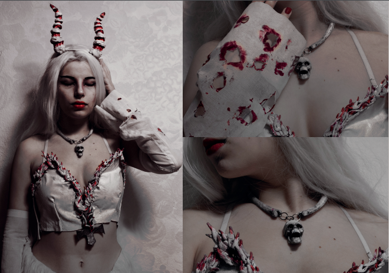
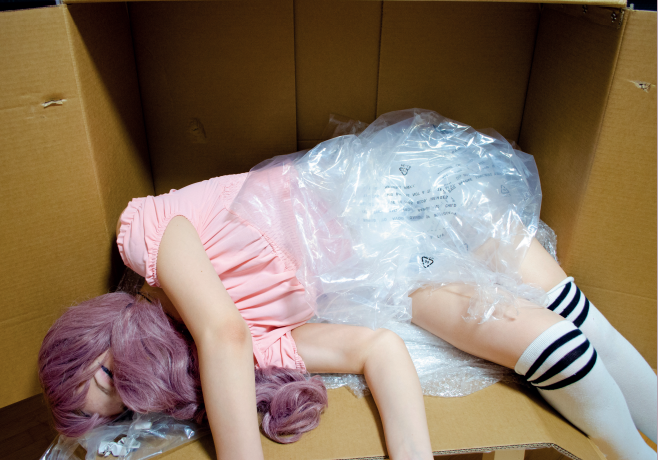
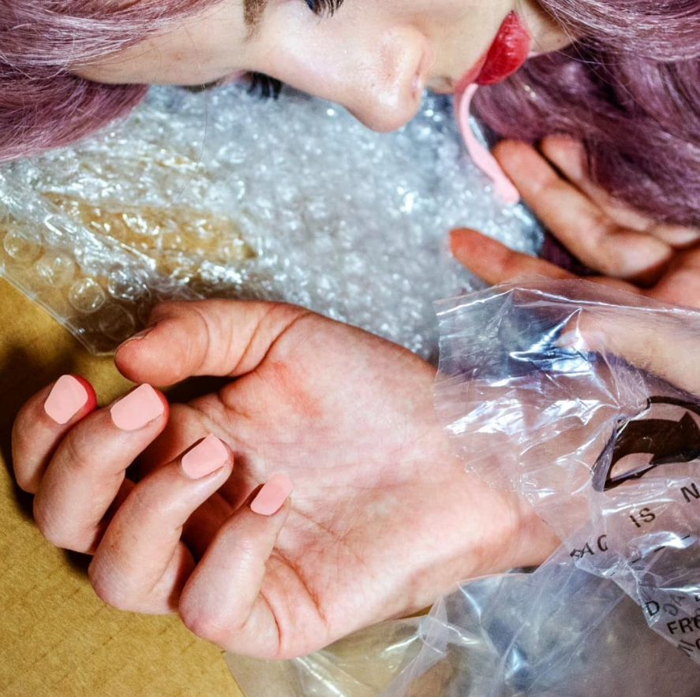

Hier eine Fotoreihe von mir, bei der ich die Bilder mit Selbstauslöser geschossen und bearbeitet habe.
Das Kostüm habe ich bis auf die Kette auch selber designt und hergestellt.
Kostümbau ist ein privates Hobby von mir.

Als ich mit 11 mit Fotografie anfing, fotografierte ich oft meine Puppen.

Ich bastelte Szenen und nähte sogar Outfits für sie, um ein Modemagazin zu machen.
Diese Fotos sind eine Anspielung auf diese Zeit.
Dieses Foto enstand in meiner Ausbildung. Eine Zeichnung sollte zum Leben erwachen.
Der Arbeitsprozess lief folgendermaßen ab:
Wir haben zwei Fotos gemacht, eines mit dem leeren Papier und eines Hand und Blumen.
Das Foto mit dem leeren Papier habe ich als Hilfe genutzt, um den Arm weg zu retuschieren.
Die Hand habe ich mit einer Einstellungsmaske entsättigt und dann ein paar Linien drum gemalt.